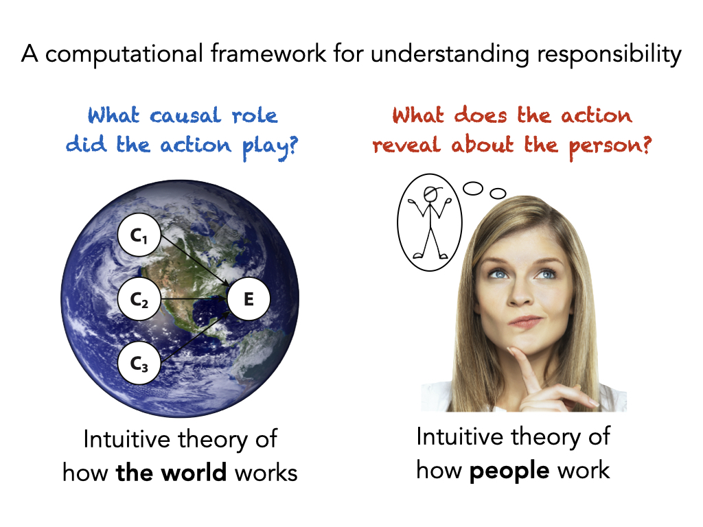

What we do
Our research uncovers how people understand the world, and how they understand each other. Our working hypothesis is that people’s knowledge of the world is organized around causally structured mental models, and that much of human thought can be understood as cognitive operations over these mental models. Through the process of mental simulation, humans can infer the past, explain the present, and predict the future. While recent years have shown the tremendous potential of what artificial intelligence can achieve, humans are still unrivaled in their intuitive understanding of how the world works. We investigate this understanding in the domains of intuitive physics and intuitive psychology.
The overarching questions that guide our research are 1) how do people figure out what caused what, 2) how do they go beyond the here and now to mentally simulate alternative possibilities, and 3) what role do causal inference and mental simulation play in how people hold each other responsible? To answer these questions our work draws inspiration from psychology, philosophy, computer science, linguistics, and the legal sciences. We develop computational models and quantitatively test these models in novel experimental paradigms with both human adults and children, using behavioral and eye-tracking data.

Our goal is to develop a comprehensive computational model of how people assign responsibility. Responsibility is the glue that holds the social world together, and understanding this concept is critical for addressing some of the most important challenges we face as society today. These include problems of collective responsibility, such as climate change and ethical AI, as well as topics of individual responsibility with legal, moral, and political consequences.
You can learn more about our work on the CiCL YouTube channel.
What we value
We not only study how people assign responsibility, we also take seriously our responsibilities as scientists, teachers, and mentors. We feel very grateful for being able to study the human mind, and we try our best to use the resources we’ve been given to generate knowledge that contributes toward a society in which we better understand one another.
Culture and community
We love doing research together! We aim to create a culture in which we learn through discussion, appreciating the different perspectives we each bring to table. We believe that in order to do good research (and to enjoy doing it), we have to take good care of ourselves first. We value a healthy work-life balance and acknowledge that an academic career presents unique mental health challenges. In order to address these challenges, we work to foster a community of mutual learning and support. When we hit a roadblock, we know that there is always a friend to talk out our thoughts with. We foster community through weekly lab meetings, coffee chats, and regular social events. We work with each other consistently, providing concrete feedback on experiments, presentations, and paper drafts to help each other produce the best scientific work we can.
Inclusion and diversity
Our lab brings together researchers from various backgrounds who love to learn from one another. To understand the full complexity of the human mind, we need to make sure that the diversity of human experience is represented in the people who study it, and in the people who participate in research. To help increase diversity in academia, we participate in Stanford’s Paths to PhD program, the FAST program, and in a variety of summer programs, such as the CSLI summer internship program. We commit to reporting demographic information about our study participants (including gender and race identification) in our research. We continue to discuss what concrete steps we can take to contribute toward diversity, equity, and inclusion. For example, every year in the week of May 25th (the day on which George Floyd was murdered), we reflect as a community in our lab meeting on what we have accomplished in the past, and set goals for the future.
Open science
Science should be open to all. We share the materials of all of our published work via the CiCL github account. In our research, we aim to only use free software (like R and python) so that our results are fully reproducible by others. We make our results freely available to everyone by posting pre-prints. We pre-register our experiments via the Open Science Framework.
How to join us
If you’re interested in our lab’s research, feel free to sign up for our lab’s email list in which we send regular updates about our research meetings. You are very welcome to join in for these!
You can also reach out and send us an email via gerstenberg@stanford.edu. We’re looking forward to hearing from you!